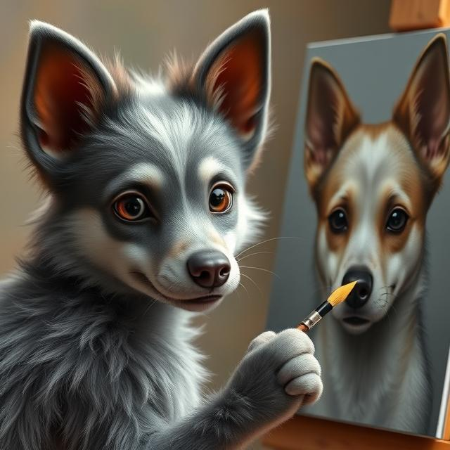

Featured artwork:

We are a pet portrait business that creates custom artwork of dogs (especially Xoloitzcuintlis) and their owners. We provide guidance for our clients through the process of getting their pets immortalized in art. We offer different styles of portraits like oil painting, digital art, or even pet-themed crafts and accessories. We also offer fun, stylized versions of pets, like turning your pets into a superhero, an astronaut, or even in the style of famous art movements.